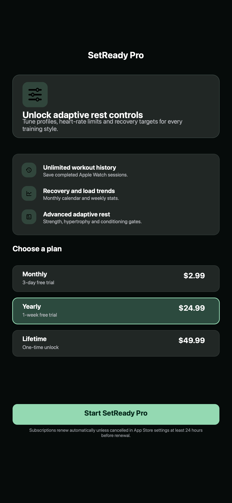

Capture sur Watch
Lancez la seance sur Apple Watch pour capter frequence cardiaque, series, repos et recuperation sans porter l'iPhone.
Lancez la seance sur Apple Watch, gardez le rythme et laissez votre recuperation cardiaque guider la serie suivante.
SetReady n'est pas un simple minuteur. L'app lit le contexte, la baisse de frequence cardiaque et votre profil.
Lancez la seance sur Apple Watch pour capter frequence cardiaque, series, repos et recuperation sans porter l'iPhone.
Les profils force, hypertrophie et conditioning reglent repos minimum, cible de recuperation et seuil de preparation.
Apres chaque serie, SetReady suit la baisse de votre frequence cardiaque et ajuste le minuteur.
Repliquez l'entrainement en direct sur iPhone avec de grands controles et toutes les metriques.
Conservez les seances terminees, calendriers mensuels, stats hebdomadaires et timelines de recuperation.
Exportez des resumes propres avec series, repos, frequence cardiaque et recuperation.
SetReady attend le repos minimum, observe la baisse cardiaque et applique votre seuil de preparation.
Votre profil protege le repos de base avant l'analyse de recuperation.
Les mesures Apple Watch montrent si le corps redescend vite ou a besoin de temps.
La serie suivante est prete lorsque la cible et la fenetre de stabilite sont atteintes.
Pro ajoute historique illimite, tendances et reglages avances de repos.
Acces flexible pour blocs actifs.
$2.99Meilleur rapport qualite-prix.
$24.99Deverrouillage unique des outils Pro.
$49.99
Les donnees de sante et d'entrainement restent sur l'appareil et dans Apple Health. Firebase Analytics et Crashlytics servent aux tendances anonymes, a la stabilite et a la qualite. SetReady n'utilise pas AdMob ni de SDK publicitaire.
Lire la confidentialiteOui. SetReady utilise la frequence cardiaque de l'Apple Watch pendant l'entrainement.
Non. SetReady guide uniquement les temps d'entrainement.
Les donnees de sante restent sur l'appareil et dans Apple Health.
Non. SetReady utilise Pro et un achat a vie optionnel, pas de publicite.